V této sekci se podíváme na základní informace o 3 platformách a jejich výhody + nevýhody. Twitch, YouTube a Mixer. Historie o každé z nich je v sekci [ ].
 Twitch
Twitch
Twitch je prakticky mezi streamovacími platformami jedna z nejstarších a nejpopulárnějších. Nabízí mnoho služeb jako samotné streamování, hostování, nájezdy na ostatní streamery, vlastní profil, propracovanou API, extensiony (které přidavají mnoho dalších fukncí) atd.
Pro malé streamery je tu možnost vydělávat peníze přes Affiliate program, do kterého se můžou zapojit automaticky po splnění pár podmínek. Tento program jim pak nabízí monetizaci přes Předplatné, prodeje her přes Twitch aplikaci, bity a umožnuje jim nahrát svoje vlastní emotikony pro předplatilele, vlastní odznaky pro jak předplatele, tak i přispěvatele přes bity atd.
Pro větší streamery tady pak je Partner program. Ten nabízí větší procenta z monetizačních funkcí pro Affiliate, možnost pouštět reklamy kdy se vám chce, získávat příjmy z reklamy, neustálá možnost pro diváky přepínat kvalitu**, "Verified" odznak pro vás viditelný po celým Twitchi, společné streamování s dalšími streamery**, více vlastních odznáčků pro předplatitele atd.
** Brzy dostupné i pro Affiliate
 YouTube
YouTube
YouTube je už hodně dlouhou dobu nejsledovanější video platforma, na kterou jdou nahrávat videa už od roku 2005 a tím si vybudoval silnou pozici na obecném internetu. Díky tomu si taky mohli dovolit přidat na svou platformu živá vysílání.
Žívá vysílání si zde můžete odemknout po splnění pár základních podmínek, pak se vám tahle možnost může vypnout, pokud porušíte nějakou ze zásad platformy nebo jen pustíte písničku bez licence.
Monetizace zde funguje díky programu YouTube Partner, avšak na území České republiky zatím nenabízí* takové monetizační možnosti jako v zemích Eurozóny včetně Slovenska. V ČR můžete spoléhat jen na příspěvky přes třetí stranu nebo reklamy přes Google AdSense.
Tam YouTube nabízí třeba kanálové předplatné na styl Patreonu, kde platíte měsiční podplatek tvůrci za určité výhody, Superchat, kde vám YouTube zvýrazní na určitou dobu vaši zprávu za vámi určenou částku a další.
* Může se časem změnit díky příchodu YouTube Premium do České republiky a tím pádem podpory české koruny ze strany YouTube
 Mixer
Nejnovější z třech vybraných, Mixer je streamovací platforma, která se snaží přidávat funkce, které nebyli na streamovacích platformách ještě k vidění, jako levelovací systém, měnu "Sparks" s kterou můžete posílat samolepky a mnoho dalšího.
Zatím nemá platforma moc co nabídnout pro české publikum, díky tomu není na Mixeru hodně českých díváků, ale pro celosvětové publikum má hodně velký potenciál a hlavně její pozice pod Microsoftem, kterým byla odkoupena a přejmenována z Beam na Mixer.